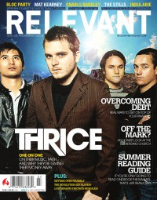

Thrice
 |
| March 2006 HM |
 |
| July 2006 Relevant |
 |
| January 2008 HM |
Media coverage:
- Mar 2004 in HM "So & So Says....: Thrice", by Doug Van Pelt
- May 2004 in Relevant "Thrice", by Jeremy Hunt, David McCorkle
- Mar 2005 in Relevant "The Soundtrack For 2005"
- Mar 2006 in HM "What Thrice Says", by Doug Van Pelt
- Jul 2006 in Relevant "Image of the Invisible", by Jamie Tworkowski
- May 2007 in CCM "Salt and Light In A Gray World: Thrice", by John J. Thompson
- Jan 2008 in HM "Thrice", by Andrew Schwab
- Feb 2008 in CCM "Don't Think Thrice, It's All Right", by Brian Quincy Newcomb
- Mar 2008 in Relevant "New Music Guide 2008: Thrice", by Eric VanValin
- Jul 2011 in HM "Poster: Thrice"
- Oct 2011 in HM "A Wrinkle In Time", by Corey Erb
- Nov 2011 in Group "Ideas: Ministry and Media: Thrice", by Scott Firestone IV
- Jul 2012 in HM "Band of Many Colours", by Seth Hecox
Albums & reviews:
2003: The Artist in the Ambulance
2005: Vheissu
2009: Live at the House of Blues
2005: Vheissu
- Jan 2006 in HM, by Doug Van Pelt
- Jan 2006 in Relevant, by Jeremy Hunt
- Apr 2006 in CCM, by Andrew Schwab
- Nov 2007 in HM, by Doug Van Pelt
- Dec 2007 in Relevant, by John Brandon
- Jan 2008 in CCM, by Brian Quincy Newcomb
- Mar 2008 in YouthWorker, by Brian Quincy Newcomb
- May 2008 in HM, by Doug Van Pelt
2009: Live at the House of Blues
- Jan 2009 in HM, by Dan MacIntosh
- Oct 2011 in HM, by Nathan Doyle
- Feb 2013 in CCM Digital, by Andy Argyrakis
- Jul 2016 in Relevant
Books about Thrice
- In Rock Stars On God, Volume 2 (Doug Van Pelt, 2012)

© 2011 CMnexus. Last updated September 2019. Contact: editor -AT- cmnexus -DØT- org About